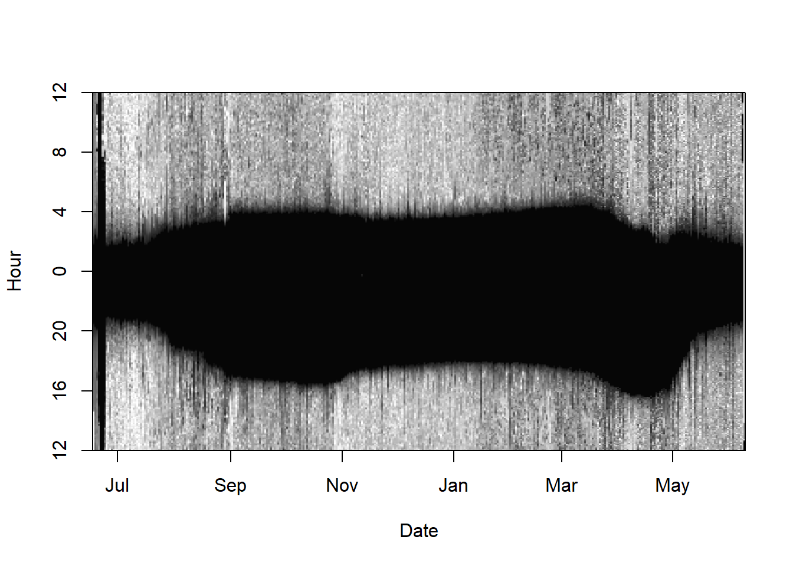
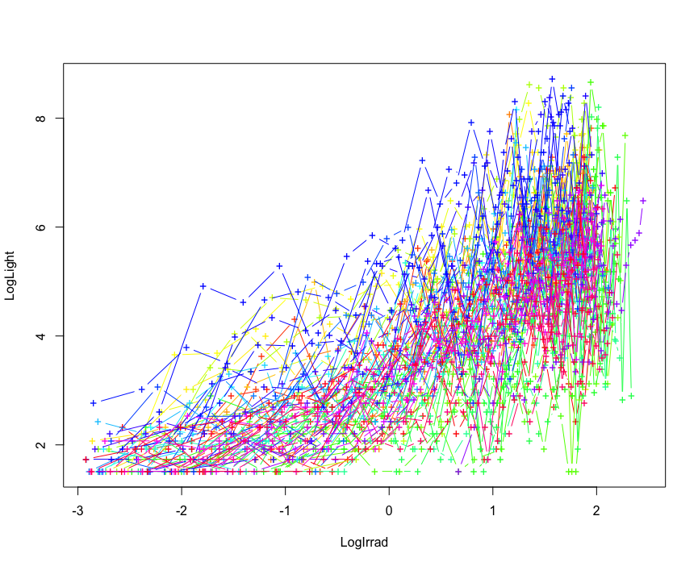
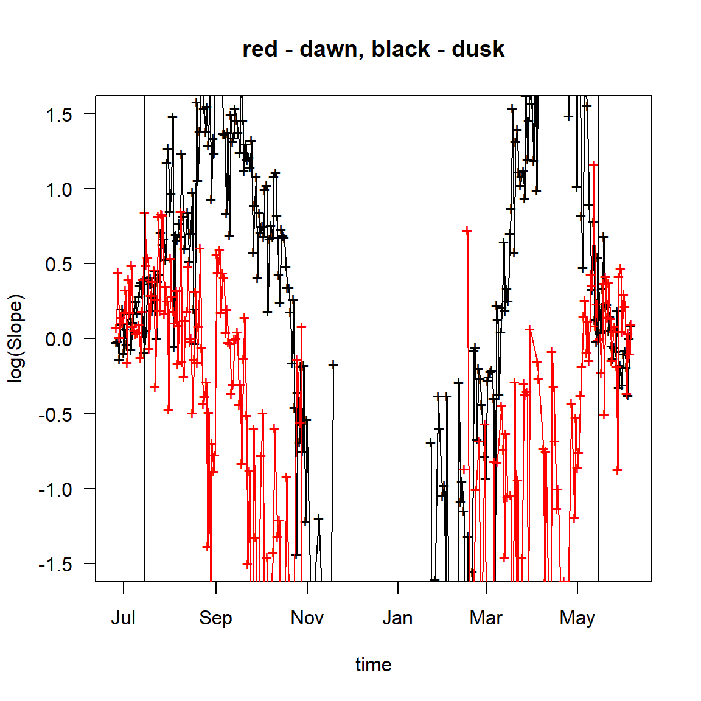
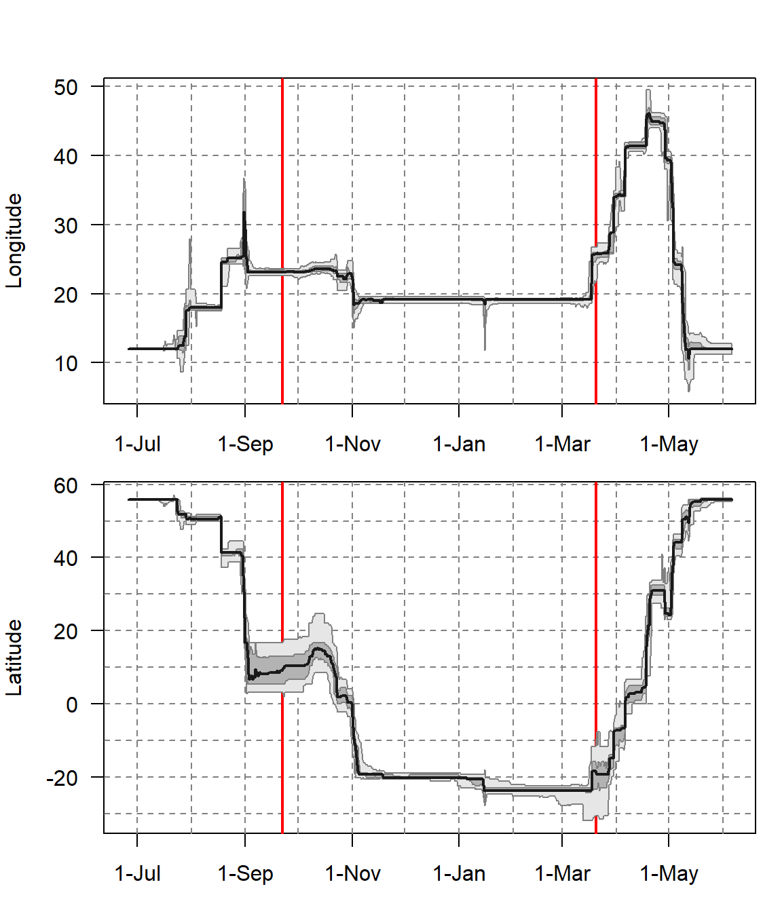

Chapter 8 FLightR
Getting started
We first define the metadata and read in the raw recordings. We then use the ligthImage to get a first look at the data.
ID <- "M034"
wd <- "Data"
Species <- "LanCol"
lon.calib <- 12.33
lat.calib <- 55.98
raw <- readMTlux(paste0(wd, "/RawData/", Species, "/", ID, ".lux"))
names(raw) <- c("Date", "Light")
raw$Light <- log(raw$Light+0.0001) + abs(min(log(raw$Light+0.0001)))
offset <- 12 # adjusts the y-axis to put night (dark shades) in the middle
lightImage( tagdata = raw,
offset = offset,
zlim = c(0, 10))
We skip the twilight annotation that can be done using the discussed tools (e.g. preprocessLight). In this case we use a twiligth file that produced with the online platform TAGS. FLightR works efficiently with the output of TAGS, which are CSV files containing the following fields:
datetime– date and time in ISO 8601 format e.g. 2013-06-16T00:00:11.000Z;light– light value measured by tag;twilight– assigned by the software numeric indication of whether the record belongs to sunrise (1), sunset (2) or none of those (0);excluded– indication of whether a twilight was excluded during manual inspection (logical,TRUE | FALSE);interp- indication of whether the light value at twilight was interpolated (logical,TRUE | FALSE). The fieldsexcludedandinterpmay have values ofTRUEonly fortwilight > 0. The online service http://tags.animalmigration.org saves data in the TAGS format. In the R packages GeoLight and BAStag or twGeos, the annotated twilight data need to be exported to TAGS, for which the functions in the FLightR (GeoLight2TAGS,BAStag2TAGSortwGeos2TAGS) can be used.
The function get.tags.data reads comma separated file in the TAGS format, detects the tag type, checks whether the light data are log-transformed, transforms them back from the log scale if needed and creates an object, containing
- the recorded light data,
- the detected twilight events,
- the light level data at the moment of each determined sunrise and sunset and around them (24 fixes before and 24 after it events into an object of two lists
- technical parameters of the tag, added automatically, unless preset by the user.
The finction works with all the common tag types: mk tags (produced by British Antarctic Survey, Lotek, and Migrate Technology Ltd.), Intigeo tags (Migrate technology Ltd.) and GDL tags (Swiss Ornithological Institute).
FLightR.data<-get.tags.data(paste0(wd, "/Results/", Species, "/", ID, "_twl.csv"))Detected Intigeo_Mode_1 tag
Data found to be logtransformed
tag saved data every 300 seconds, and is assumed to measure data every 60 seconds, and write down max Calibration
Geolocators measure light levels with different precision, and calibration is needed to establish the relationship between the observed and the expected light levels for each device. This relationship is depicted by the calibration parameters (slopes), calculated using the data recorded in known (calibration) geographic positions, e.g. where the animal was tagged, recaptured or observed. FLightR uses a ‘template fit’ for calibration Ekstrom 2004, 2007. For each tag it finds the linear (on a log-log scale) relationship between the light levels measured in known locations and the theoretical light levels, estimated from current sun angle in these locations with the deterministic equation developed by Ekstrom Rakhimberdiev et al. 2015.
To calculate the calibration parameters user needs to create a data frame where the geographic coordinates of the calibration location, and the start and end dates of the calibration period, i. e. the period of residence in the known location, are specified:
calibration.start(POSIXct format)calibration.stop(POSIXct format)lon(numeric)lat(numeric)
The data frame contains as many rows as many distinct calibration periods the track contains.
Calibration.periods<-data.frame(
calibration.start=as.POSIXct(c(NA, '2015-05-15')),
calibration.stop=as.POSIXct(c('2014-07-15', NA)),
lon=lon.calib, lat=lat.calib)
# use c() also for the geographic coordinates,
# if you have more than one calibration location
# (e. g., lon=c(5.43, 6.00), lat=c(52.93,52.94))
print(Calibration.periods) calibration.start calibration.stop lon lat
1 <NA> 2014-07-15 12.33 55.98
2 2015-05-15 <NA> 12.33 55.98 Please carefully look at the data.frame you have created!
Please carefully look at the data.frame you have created!
The first column should contain dates of the calibration start and the second - ends of the calibration periods.
In this example, we have two calibration periods in the same location, at the beginning and at the end of the track. This is a common case, as the birds are often recaptured at the same location, where they were tagged.
When multiple calibration locations are available, each of them has to be processed with the function plot_slopes_by_location. In this case, in the Calibration periods data frame, each row should refer to one calibration period. Compiling the data frame with multiple calibration locations, use c() also for the geographic coordinates (e. g., lon=c(5.43, 6.00), lat=c(52.93,52.94)).
A Calibration object is compiled with the functionmake.calibration from the created Calibration periods data frame and the FLightR.data object.
Calibration<-make.calibration(FLightR.data, Calibration.periods, model.ageing=TRUE, plot.final = T)
This object contains all the calibration parameters for the tag, and it will be further used for calculation of geographic positions across the track. When there are more than one calibration periods, the parameter model.ageing can be set TRUE to account for the tag ageing. In this case, the calibration parameters are calculated, based on the assumption that the calibration slope changes linearly with time. Alternatively, one can use one very long calibration period to try estimating ageing of the tag. We would recommend to have at least two months in a known location to be able to do that.
Find calibration periods for a known calibration location
The exact period of a tagged animal’s stay in a known location is usually unknown, but it can be derived from the data. For this, calibration slopes for the sunset and sunrise of each day of the tracking period are calculated, based on the assumption that the tag remained in the same known position all the time. The slopes are calculated and plotted with the function plot_slopes_by_location.
plot_slopes_by_location(Proc.data=FLightR.data, location=c(12.23, 55.98), ylim=c(-1.5, 1.5))
abline(v=as.POSIXct("2015-05-15")) # end of first calibration period
abline(v=as.POSIXct("2014-07-15")) # start of the second calibration period
Looking at the plot, we can define the time periods, during which the tag resided in the calibration location (recall, that we assume that the tag remained in this location all the time). Because calibration slopes reflect the adequacy of the light level measured by the device, they vary little, in time and between sunsets and sunrises, as long as the tagged animal stays in the calibration location, but become apparently diverse, when it moves away from it. Both patterns are clearly distinguishable at the plot.
Play with abline() to find the proper boundaries for the calibration.
With the current tag it is a bit complicated to see the end of the calibration period and also the first arrival back to the calibration site. To solve the problem we have made two runs - first with the obcvious short calibration period:
Calibration.periods<-data.frame(
calibration.start=as.POSIXct(c(NA)),
calibration.stop=as.POSIXct(c("2014-07-07")),
lon=12.23, lat=55.98) We ran the full estimation procedure with based on this short calibration. Looked at bird departure and arrival dates from and to breeding site (with simple plot_lon_lat(Result)), used these dates to create new calibration periods and to run the final analysis. If you will do the same, please note, that you should select edges of the calibration period on a safe side - at least 24 hours before the migration.
Find a calibration location for a known calibration period
It may happen that an animal was tagged in the High Arctic under polar day conditions or that it moved far away from the capture site immedialtly after tagging and the roof-top calibration data are not available. Even in such cases it is still possibe to obtain calibration parameters for a resident period at unknown location. FLightR approach to this problem is similar to Hill-Ekstrom calibration Lisovski et al. 2012b implemented in GeoLight Lisovksi et al. 2012a. If bird is assumed to be resident at some period one can try:
# ~ 15 min run time
Location<-find.stationary.location(FLightR.data, '2014-09-05', '2014-10-07',
initial.coords=c(25, -10))After 15 minutes the function will return geographic coordinates of the location for which the range of errors in slopes is minimal. User has to provide the initial coordinates, which should be within a few thousand kilometers from the hypothetical real location.
 Note that this function is experimental and does not always produce meaningful results . Try it from different initial locations, and check whether it gets to the same result. >/div>
Note that this function is experimental and does not always produce meaningful results . Try it from different initial locations, and check whether it gets to the same result. >/div>
Assign spatial extent
Before running the model you will have to make a scientific guess on where you expect your bird to fly and assign a spatial grid (50 X 50 km) with user-defined boundaries, within which your model will calculate probabilities of presence of the birds. The wider you set the grid boundaries,the longer will take the model to run. If you have set the boundaries too narrow, you will see it in the output map: the defined location points will bounce close to the grid boundaries (as in our example XXXX). In this case you will have to extend the grid and re-run the model.
To set up the grid use the function make.grid and define the boundaries: left, right. bottom and top. It is possible that your tagged animal cannot occur or stay between two subsequent twilights over particular areas, for example, over open water if it is a landbird or deep inland if it is a marine animal. In this case we recommend to apply additional parameters distance.from.land.allowed.to.use and distance.from.land.allowed.to.stay. Such restrictions will minimize the area processed and this way facilitate the analysis. Each of the parameters require a vector of two numbers: the minimal and the maximal distances (in km) from shoreline, at which the animal is allowed to occur/stay. The numbers can be negative. For instance, distance.from.land.allowed.to.stay=-30, will not allow your bird to stay further than 30 km inland from the shore. In our example we allow our shrike to fly over the water, but not further than 200 km offshore, and to be statuionary within 50 km from the land.
Grid <- make.grid(left=5, bottom=-33, right=50, top=60,
distance.from.land.allowed.to.use=c(-Inf, 200),
distance.from.land.allowed.to.stay=c(-Inf, 50))
The resulting Grid is a matrix with the columns: lon (longitude), lat (latitude) and Stay (probability of stay). Grid cells that presumably cannot be visited by the animal are excluded from the data, while the locations at which an animal cannot be stationary are given a low probability of stay. The function produces a visual representation of the created grid with orange poins where the bird is allowed to be stationary and grey, where the bird can fly but not stay. Have a look at the figure and make sure it is correct. Using masks can side track model estimation to the local minima, and we recommend to initially run the model without the mask, enable the mask for the second run and visually compare the results to see if the model has converged to similar tracks.
Prepare the model for run
At this stage, all the objects, created at earlier steps: the light data with the detected twilight events (FLightR.data), the spatial parameters (Grid), geographic coordinates of the initial location, where the tracking has started (start), and the calibration parameters (Calibration), are to be incorporated in one complex object , which will be used in the main run. Use the function make.prerun.object for the compilation. Using this function you can also change the priors for the movement model. For example we set M.mean parameter to 750 km, because we know that shrikes migrate fast and also because we have explored the results and figured out that average migration distance was actually 750 km.
# ~ 15 min run time
all.in <- make.prerun.object(FLightR.data, Grid, start=c(lon.calib, lat.calib),
Calibration=Calibration, M.mean=750)This is the first object we want to save. It contains the twiligth file, the calibration information as well as the likelihood surfaces for each twilight.
save(all.in, file = paste0(wd, "/Results/", Species, "/", ID, "_FlightRCalib.RData"))Particle filter run
Once you have got the run.particle.filter running, expect your computer to be busy for about 45 minutes. During this time it will generate the model output (we will call it “Results”) containing: * a table of positions at each twilight ($Results$Quantiles), * statistics of the positions (mean, median values and credible intervals), * a table of parameters of the movement model ($Results$Movement.results), * posterior distribution of the parameters at every twilight ($Results$Points.rle) and * at every transition between twilights ($Results$Transitions.rle).
Within run.particle.filter, the following parameters can be defined: * nParticles - number of particles (we recommend to use 1e4 for test and 1e6 for the analysis); * threads - amount of parallel threads to use for the run default is -1 that means all available except one; * known.last - TRUE if you know that in the end of the logging period tag occurred in a known place (FALSE is the default option); * check.outliers – FALSE by default. Set it to TRUE if you wish on-the-fly outliers detection, highly recommended if the results have strong outliers. * b - the maximum distance allowed to be travelled between two subsequent twilights.
nParticles=1e6
Result<-run.particle.filter(all.in, threads=-1,
nParticles=nParticles, known.last=TRUE,
precision.sd=25, check.outliers=F,
b=1700)Again we want to save the Result.
save(Result, file = paste0(wd, "/Results/", Species, "/", ID, "_FLightRResult.RData"))Exploration of results
First look - plot longitude and latitude
After the results have been saved the first thing to do is to plot change of longitude and latitude over time. This is a very important graph.
plot_lon_lat(Result)
With this graph, please, carefully check whether: 1. Your track does not approach boundaries of the spatial grid you defined (you ave to keep those in mind assessing the graph). If this is the case, change spatial extend and rerun the analysis. 2. There are no sudden jumps that have no uncertainty measurements around them. These are likely outliers that should be excluded beforehands. 3. Presented by the model estiamates of time-periods spent by the bird at the calibration site match calibration periods assigned before the model run. If they do not, correct the calibration periods, redo the calibration and rerun the model. 4. There are no S-shape patterns in estimated latitude around equinox. Such patterns point at either incorrect calibration or very poor data. Try to improve your calibration periods or concider taking calibration data from another tag taken from the same species.
Summary
Repeatability of output
Note that however many times you will re-run the model with the same input parameters, you will never get the same output. Please, do not panic, as stochasticity of probabilities is an inherent feature of Bayesian analysis. Also, if you look closer at your results, you will notice that the outputs vary within each others’ standard errors.
Defining stopovers
FLightR is honest defining stopovers, which may seem a disappointing feature, but it makes us thinking. In general, geolocation analysis is all about how likely the bird was present in specific location at specific moment and how likely it was moving between two subsequent locations. It is not a problem when you work with long-distance migrants, such as bar-tailed godwit Rakhimberdiev et al. 2016, since it has very apparent stopover phases between apparent migration-flight bouts. However, many bird species migrate in little hops and literary stop “at every bush”. Here you can get rather messy results, due to the overlapping probability distributions. In any case, we recommend to play with the stopover probabilities by tweaking the cut-off probability parameter of 1stationary.migration.summary`. Recall that for each location and time moment the model generates a probability that the bird was moving to the next location. The cut-off probability is the minimal threshold probability of movement, at which we assume that the bird was actually moving. Depending on the assigned cut-off probability parameter, the model will consider the bird more or less likely to be stationary. In birds migrating in long leaps with few stops, defined stopovers are usually rather robust. However, in hopping migrants, probabilities of stopovers may vary, depending on the chosen cut-off probability parameter, which is a bad news if describing stopovers is the prior goal of your study. But, frankly speaking, what is stopover and does it exist in migrants moving in short hops? Presenting your results, you may arbitrarily choose the most adequate (repeatable) output and mention the cut-off probability, with which it was obtained. However, if you want to describe stopovers explicitly, you might want to present outputs obtained with several cut-off probability parameters and speculate about the variation. Most likely, some of your stopovers will be defined repeatedly with a range of cut-off parameters being assigned, and some will be less robust. Our shrike had rather distinct migration/stopover pattern. However, we get a slightly more stopovers with cut-off probabilities of 0.1 and 0.2.
To distinguish between the phases of movement and stationarity use the function stationary.migration.summary helps . The process usually takes around 15 minutes of computer time.
Summary<-stationary.migration.summary(Result, prob.cutoff = 0.2)To visualise results of this function we will plot them on a map.
# Now we want to plot the detected stationary periods on a map
Summary$Stationary.periods$stopover_duration<-as.numeric(difftime(Summary$Stationary.periods$Departure.Q.50,Summary$Stationary.periods$Arrival.Q.50, units='days'))
# Now I want to select the periods which were >=2 days and
Main_stopovers<-Summary$Stationary.periods[is.na(Summary$Stationary.periods$stopover_duration) | Summary$Stationary.periods$stopover_duration>=2,]
# delete breeding season
Main_stopovers<-Main_stopovers[-which(is.na(Main_stopovers$stopover_duration)),]
Coords2plot<-cbind(Result$Results$Quantiles$Medianlat, Result$Results$Quantiles$Medianlon)
for (i in 1:nrow(Summary$Potential_stat_periods)) {
Coords2plot[Summary$Potential_stat_periods[i,1]:
Summary$Potential_stat_periods[i,2],1] =
Summary$Stationary.periods$Medianlat[i]
Coords2plot[Summary$Potential_stat_periods[i,1]:
Summary$Potential_stat_periods[i,2],2] =
Summary$Stationary.periods$Medianlon[i]
}
Coords2plot<-Coords2plot[!duplicated(Coords2plot),]
#pdf('FLightR_shrike_migration_with_stopovers.pdf', width=6, height=9)
par(mar=c(0,0,0,0))
map('worldHires', ylim=c(-35, 60), xlim=c(-20, 50), col=grey(0.7),
fill=TRUE, border=grey(0.9), mar=rep(0.5, 4), myborder=0)
lines(Coords2plot[,1]~Coords2plot[,2], col='red', lwd=2)
points(Coords2plot[,1]~Coords2plot[,2], ,lwd=2, col='red', pch=19)
# Here we assign the colours to represent time of the year
Seasonal_palette<-grDevices::colorRampPalette(grDevices::hsv(1-((1:365)+(365/4))%%365/365,
s=0.8, v=0.8), space="Lab")
Seasonal_colors<-Seasonal_palette(12)
Main_stopovers$Main_month<-as.numeric(format(Main_stopovers$Arrival.Q.50+
Main_stopovers$stopover_duration/2, format='%m'))
points(Main_stopovers$Medianlat~Main_stopovers$Medianlon, pch=21,
cex=log(as.numeric(Main_stopovers$stopover_duration)),
bg=Seasonal_colors[Main_stopovers$Main_month])
# Now, for each of these points we plot the uncertainties
# Horizontal
segments(y0=Main_stopovers$Medianlat, x0=Main_stopovers$FstQu.lon,
x1=Main_stopovers$TrdQu.lon, lwd=2)
# Vertical
segments(x0=Main_stopovers$Medianlon, y0=Main_stopovers$FstQu.lat,
y1=Main_stopovers$TrdQu.lat, lwd=2)
# and we also need to add breeding site here:
points(x=12.23, y=55.98, cex=6, pch=21 , bg=Seasonal_colors[6])
# dev.off()
Getting specific output
The function find.times.distribution derives the time at which an animal arrived or departed from the area and provides the measure of its uncertainty. First, select grid points of interest. For example in the current data we are interested in the date when our bird left from the breding grounds and when it was back. We will make a boundary at 55.5° latitude:
Index<-which(Result$Spatial$Grid[,2]>55)Estimate probabilities of occurrence within the area at each twilight:
Arrivals.breeding<-find.times.distribution(Result,Index)
print(Arrivals.breeding) Q.025 Q.25 Q.50
1 2014-07-22 22:32:04 2014-07-23 17:27:14 2014-07-24 03:20:51
2 2015-05-12 01:22:59 2015-05-13 00:21:03 2015-05-14 13:54:11
Q.75 Q.975
1 2014-07-24 14:32:33 2014-07-25 17:36:17
2 2015-05-20 13:58:56 2015-05-26 06:00:36Visualisation of the results
Plot a simple map
Plot a map with the most probable positions, i.e. combinations of the most probable latitude and longitude for each twilight:
try(map.FLightR.ggmap(Result, zoom=3, save = FALSE)) We use
We use try here to ease automated rendering. Just exclude it for your own runs. We also recommend a very nice feature of this function: zoom='auto' that will try finding optimal zoom for your output.
Plot utilization distribution
Plot space utilisation distribution for the wintering range:
try(tmp <- plot_util_distr(Result,
dates=data.frame(as.POSIXct('2014-12-01'), as.POSIXct('2015-01-31')),
add.scale.bar=TRUE, percentiles=0.5, zoom=7, save = FALSE)) we use try here to ease automated rendering. Just exclude it for your own runs. We also recommend a very nice feature of this function: zoom='auto' that will try finding optimal zoom for your output. >/div>